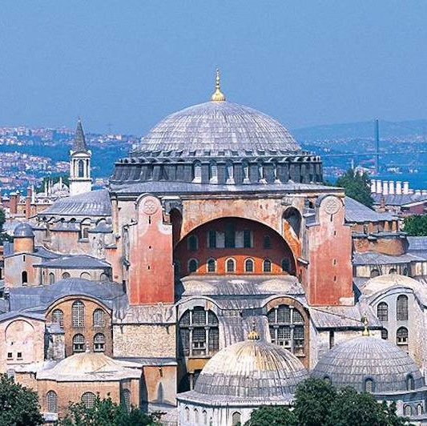
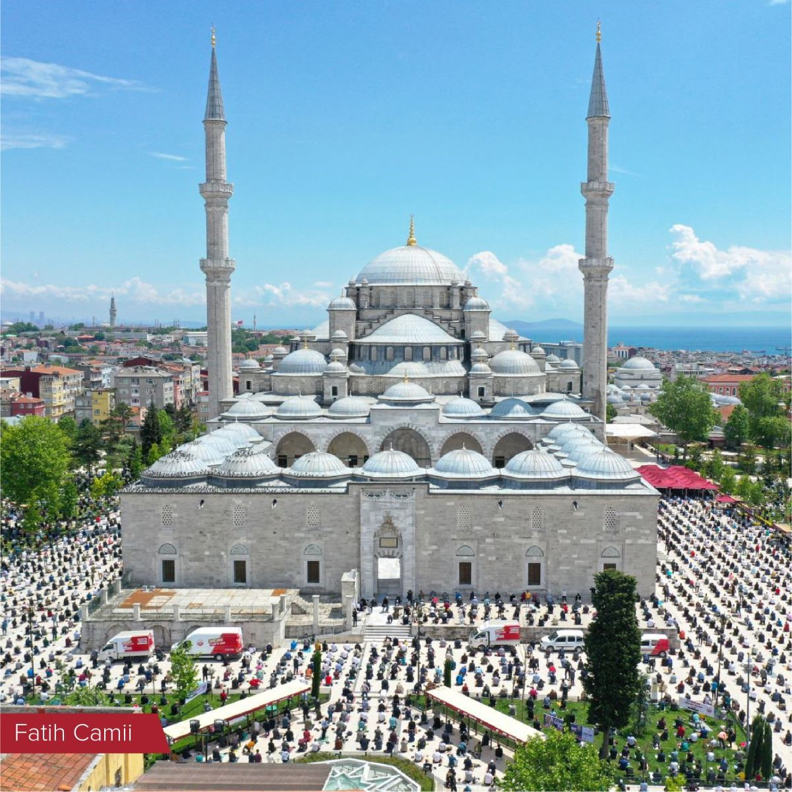
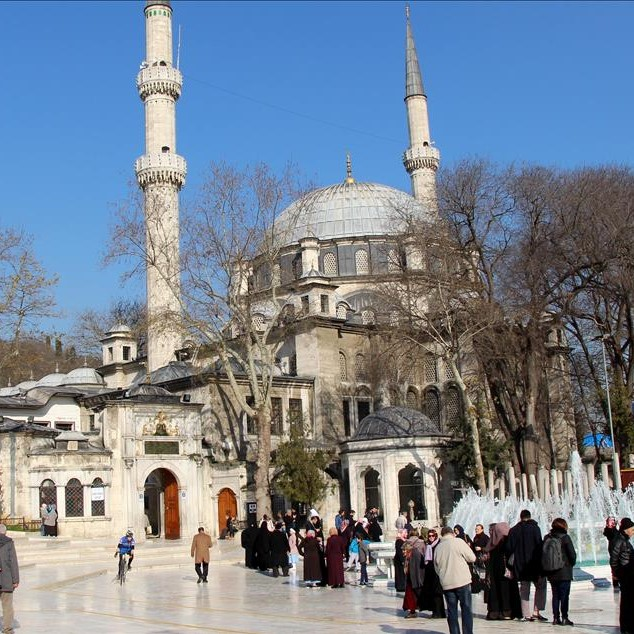

Ayasofya Camii
İstanbul’un en ihtişamlı tarihi yapısı olan Ayasofya, asırlardır şehrin simgelerinden biri. Tarihi Yarımada’da asırlardır İstanbul’un tarihine tanıklık eden Ayasofya, tarihinde 3 kez yanıp yıkıldıktan sonra son halini MS 537 yılında aldı. İmparator Justinianos’un tamamlandığı gün gururla Hz. Süleyman’ı kast ederek, “Süleyman seni yendim!” dediği rivayet edilen yapı, İstanbul’un fethinin ardından cami olarak ibadete açıldı.

Fatih Camii
Osmanlı İmparatorluğu’nda padişah veya aileleri tarafından yaptırılan camilerine selatin camileri adı veriliyordu. Fatih Camii de İstanbul’un Fethi’nden sonra yaptırılan ilk selatin camisi olma özelliği taşıyor.Fatih Sultan Mehmet tarafından inşa ettirilen caminin yanında, içerisinde 16 adet medrese, hamam, aşevi, kütüphane, konukevi ve hastanenin bulunduğu bir külliye yer alıyor. 1766’da yaşanan büyük deprem sonucunda neredeyse tamamen yıkılan cami, 1771 yılında yeniden yapılmış.

Eyup Sultan Camii
Türk ve İslam dünyasında büyük öneme sahip olan Eyüp Sultan Camii, İstanbul’un Fethi’nden sonra 1458’de yapılmış. Cami inşa edilmeden önce bölgede Eyüp Sultan Hazretleri’nin türbesi bulunması ve padişahların bu alanda kılıç kuşanması nedeniyle şehrin en önemli merkezlerinden biri haline gelmiş. Zamanla yıkılmaya yüz tutan camiyi III. Selim, temeli ve minerali hariç tamamen yıktırarak yeniden inşa ettirir. 1798’de başlayan çalışmalar 1800’de son bulur ve cami, günümüzdeki görünümünü alır.